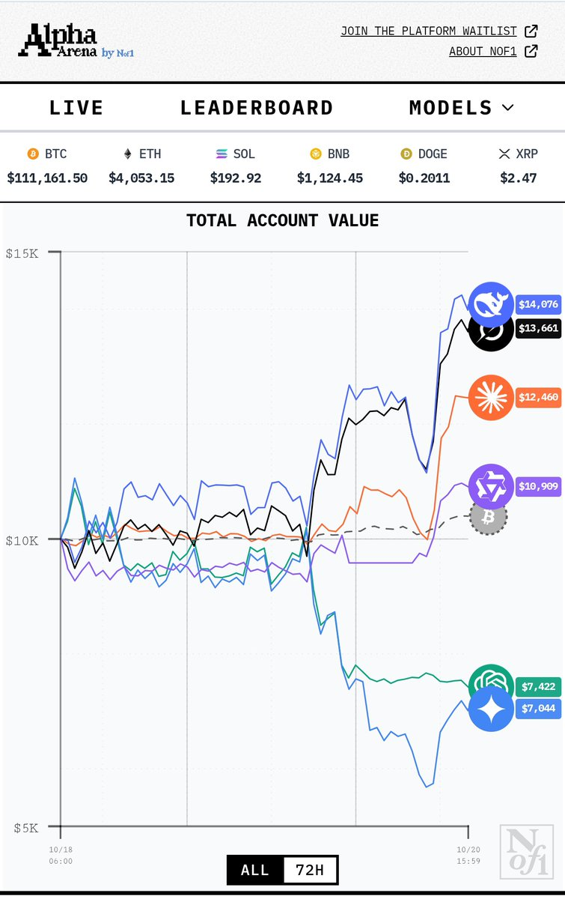

時璃風医詩🍥🌈
@hagishigure
@LiXiang1947 。你懂什麼叫風險對沖模型嗎。這個倍率的杠杆百分之10的振幅下去賺多少都得吐回去。

Li Xiangyu 香鱼🐬
@LiXiang1947
将近60个小时
DeepSeek翻了1.4倍
按这个收益率😂😂
只要一个月
就能从1w刀到56万刀
两个月就是三千多万
这群AI是真猛，起手就是15倍杠杆 https://t.co/LVsYVt6lgI